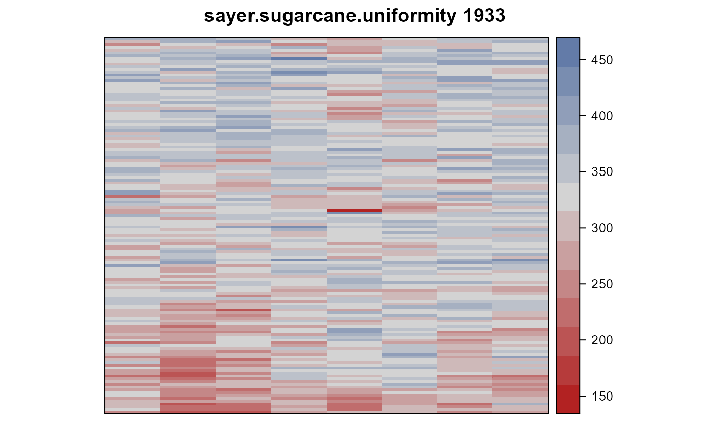
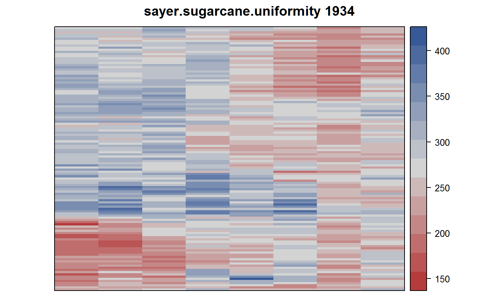

sayer.sugarcane.uniformity.RdUniformity trial of sugarcane in India, 1933 & 1934.
data("sayer.sugarcane.uniformity")
A data frame with 2056 observations on the following 4 variables.
rowrow
colcolumn
yieldyield, pounds/plot
yearyear
1933 Experiment
First experiment was conducted in 1933 at Meghaul (Monghyr). A road was cut through the field, creating blocks 480 ft x 315 ft and 480 ft x 93 ft. (See Plate XLI). There were 136 rows, 3 feet apart, 480 feet long each. It required 16 days to harvest the 1088 plots. Each plot was 1/242 acre. The authors conclude that long narrow plots of 12/242 to 16/242 acre would be best.
Field width: 8 plots * 60 feet = 480 feet
Field length: 136 rows * 3 feet = 408 feet
1934 Experiment
This experiment was conducted at the New Area, Pusa. The experiment was laid out in 6 blocks, each separated by a 3-foot bund. The cutting of the canes began in Jan 1934, taking 24 days. (An earthquake 15 January delayed harvesting). Conclusion: Variation is reduced by increasing the plot size up to 9/242 acre.
Field width: 8 plots * 60 feet = 480 feet
Field length: 121 rows * 3 feet = 363 feet
1933 Data
Wynne Sayer, M. Vaidyanathan and S. Subrammonia Iyer (1936). Ideal size and shape of sugar-cane experimental plots based upon tonnage experiments with Co 205 and Co 213 conducted in Pusa. Indian J. Agric. Sci., 1936, 6, 684-714. Appendex, page 712. https://archive.org/details/in.ernet.dli.2015.271737
1934 data
Wynne Sayer and Krishna Iyer. (1936). On some of the factors that influence the error of field experiments with special reference to sugar cane. Indian J. Agric. Sci., 1936, 6, 917-929. Appendix, page 927. https://archive.org/details/in.ernet.dli.2015.271737
None
library(agridat) data(sayer.sugarcane.uniformity) dat33 <- subset(sayer.sugarcane.uniformity, year==1933) dat34 <- subset(sayer.sugarcane.uniformity, year==1934) b1 <- subset(dat33, row<31) b2 <- subset(dat33, row > 30 & row < 61) b3 <- subset(dat33, row > 60 & row < 91) b4 <- subset(dat33, row > 105 & row < 136) mean(b1$yield) # 340.7 vs Sayer 340.8#> [1] 340.7021#> [1] 338.1708#> [1] 331.35#> [1] 295.3833#> [1] 270.8296libs(desplot) desplot(yield ~ col*row, dat33, flip=TRUE, aspect=408/480, # true aspect main="sayer.sugarcane.uniformity 1933")desplot(yield ~ col*row, dat34, flip=TRUE, aspect=363/480, # true aspect main="sayer.sugarcane.uniformity 1934")